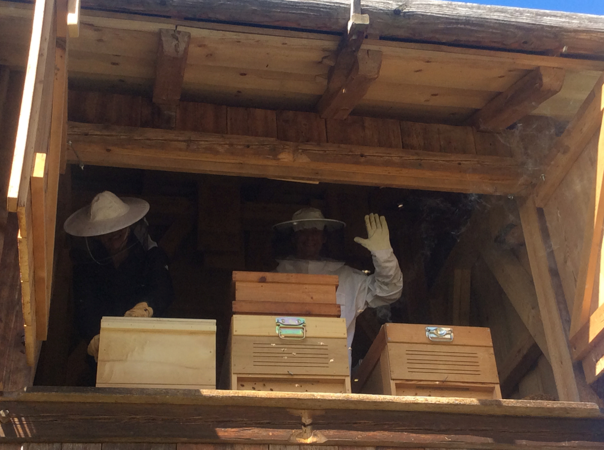
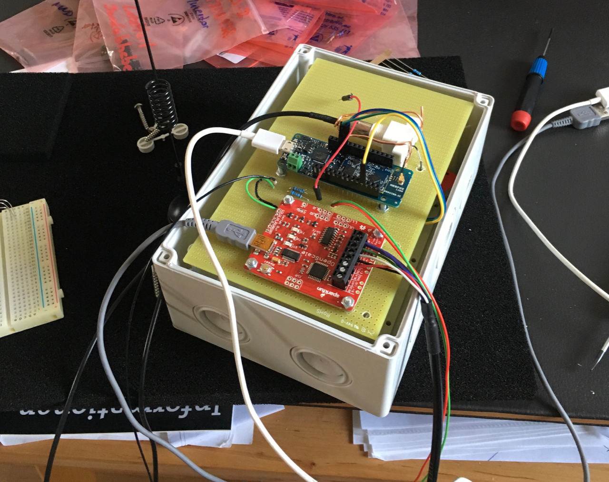
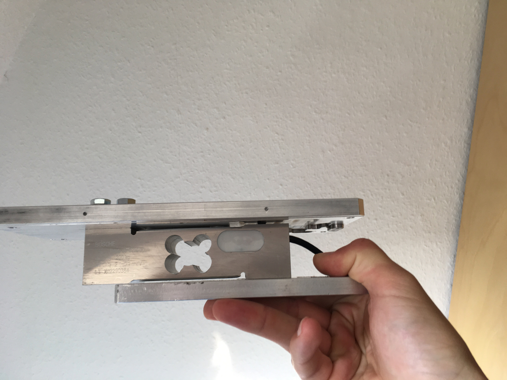

Target
Building a system for remote monitoring of the current bee conditions.
This is the project I am currently working on, so the documentation below is being continuously updated, as well as the connected Github repository.
Technical solution
Sensors
- Weight changes of the whole bee hive
- Temperature on defined spots
- Humidity inside and outside the hive
- Illumination of flight entrance
- Measurement of barometric pressure
1. Scale
I chose Bosche H40A load cell (200 kg) to measure the weight and fixed it to two aluminium plates. I used those which I had readily available, but normally I would prefer slightly larger ones. OpenScale microcontroller from Sparkfun has been used to convert the signal from the scale and communicate with Arduino over serial interface.
2. Temperature sensors
Several temperature sensors are used in the project:
- On-board temperature sensor from OpenScale to measure temperature in the computer case.
- Temperature and humidity sensor DHT22 to measure temperature and humidity inside the bee hive.
- BMP280 barometric pressure sensor used also for measurement of outside temperature.
Controller
- Remote radio communication
- Low power
- Coding
I use MKR FOX 1200 for the radio communication. This Arduino module uses Sigfox network to send messages. The advantage of this is the simple low weight communication protocoll enabling low energy consumption, high signal coverage and low costs.
Code
See my Github project page for the Arduino source code.
Presentation
- Cloud dashboard
- Notifications
For small scale IoT projects, Thinger.io is a suitable platform, since it has some free features. See the prototype dashboard.
Ideas for improvement
- Camera
- Extension for another bee hive